CONHEÇA OS PILOTOS DE 2026!
SCUDERIA FERRARI
- CHARLES LECLERC & LEWIS HAMILTON
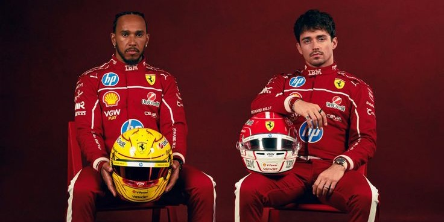
Charles Leclerc, piloto monegasco corre para a Ferrari desde 2019 com o número 16 enquanto Lewis Hamilton é britânico e corre para a Ferrari desde 2025 com o número 44.
MERCEDES AMG-PETRONAS
- GEORGE RUSSELL & KIMI ANTONELLI
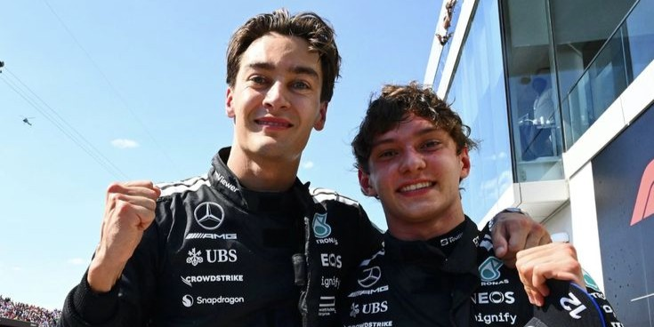
George Russell, piloto britânico corre para a Mercedes desde 2017 com o número 63 enquanto Kimi Antonelli é italiano e corre para a Mercedes desde 2025 com o número 16.
MCLAREN
- LANDO NORRIS & OSCAR PIASTRI
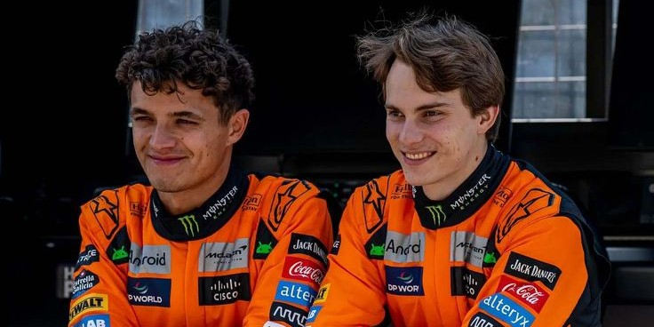
Lando Norris, piloto britânico corre para a McLaren desde 2019 com o número 1 enquanto Oscar Piastri é australiano e corre para a McLaren desde 2023 com o número 81.
HAAS
- ESTEBAN OCON & OLLIE BEARMAN
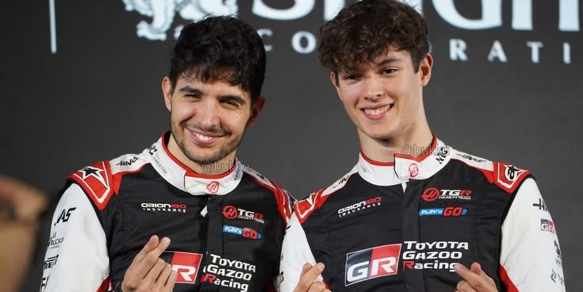
Esteban Ocon, piloto frânces corre para a Haas desde 2017 com o número 31 enquanto Ollie Bearman é britânico e corre para a Haas desde 2025 com o número 87.
REDBULL RACING
- MAX VERSTAPPEN & ISAACK HADJAR
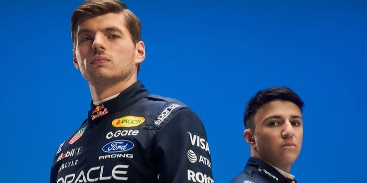
Max Verstappen, piloto holândes corre para a Red Bull desde 2016 com o número 3 enquanto Isaack Hadjar é britânico e corre para a Red Bull desde 2026 com o número 6.
RACING BULLS
- LIAM LAWSON & AVRID LINDBLAD
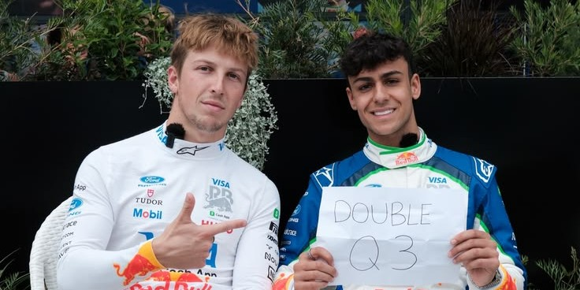
Liam Lawson, piloto neozelândes corre para a Racing Bulls desde 2017 com o número 30 enquanto Avrid Lindblad é britânico e corre para a Haas desde 2026 com o número 41.
ALPINE
- PIERRE GASLY & FRANCO COLAPINTO
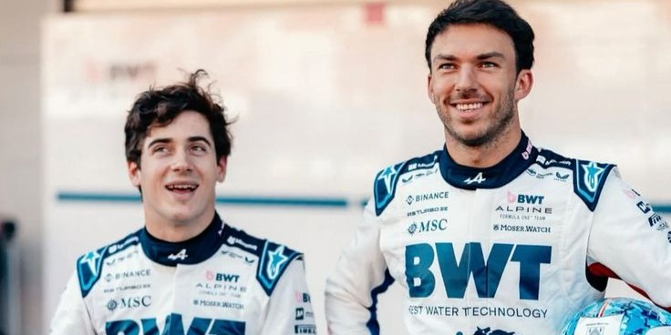
Pierre Gasly, piloto frânces corre para a Alpine desde 2023 com o número 10 enquanto Franco Colapinto é argentino e corre para a Alpine desde 2025 com o número 43.
AUDI
- NICO HULKENBERG & GABRIEL BORTOLETO
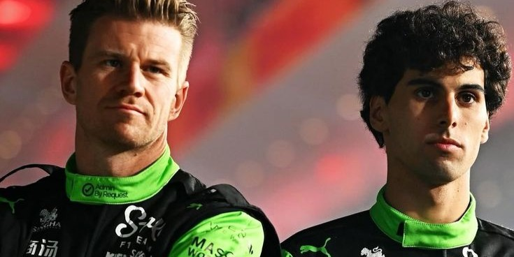
Nico Hulkenberg, piloto alemão corre para a Audi desde 2026 com o número 27 enquanto Gabriel Bortoleto é Brasileiro e corre para a Audi desde 2026 com o número 5.
WILLIAMS
- CARLOS SAINZ & ALEXANDER ALBON
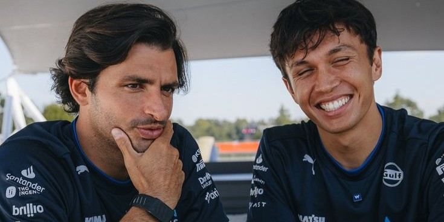
Carlos Sainz, piloto Espanhol corre para a Williams desde 2025 com o número 55 enquanto Alexander Albon é Tailândes e corre para a Williams desde 2022 com o número 23.
CADILLAC
- SERGIO PEREZ & VALTTERI BOTTAS
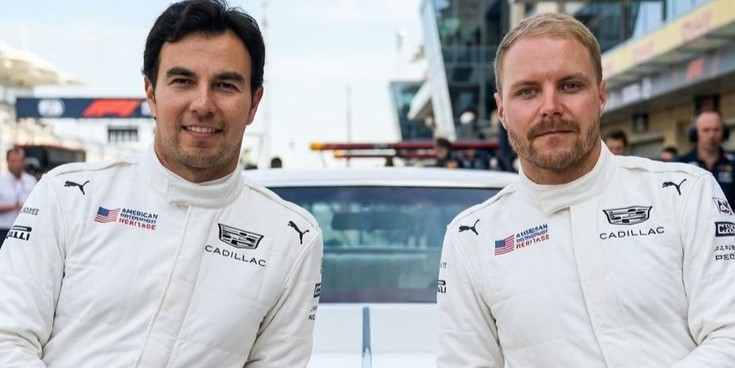
Sergio Perez, piloto Mexicano corre para a Cadillac desde 2026 com o número 11 enquanto Valterri Bottas é Finlândes e corre para a Cadillac desde 2026 com o número 77.
ASTON MARTIN
- FERNANDO ALONSO & LANCE STROLL
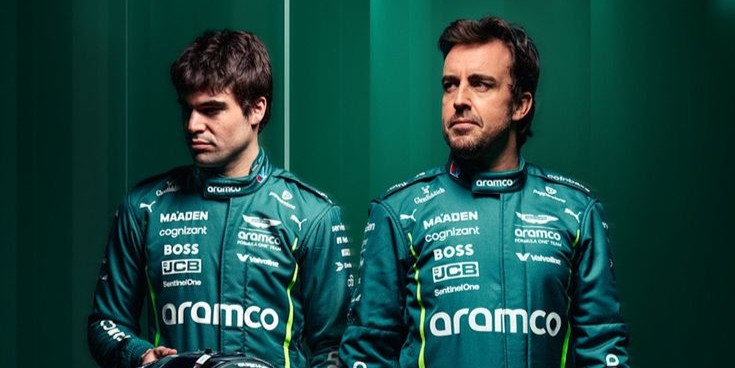
Fernando Alonso, piloto Espanhol corre para a Aston Martin desde 2023 com o número 14 enquanto Lance Stroll é Canadense e corre para a Aston Martin desde 2021 com o número 18.